以火山视窗为例介绍：
● 假设有一家工厂，所生成的产品是电水壶，这种电水壶有这些主要特点：
1、由壶体和壶盖组成；
2、颜色是银白色的；
3、有一个开关可以控制启动烧水；
4、水烧开后会发出鸣叫声音报警。
按照面向对象的设计方法，我们把这个电水壶称为这个工厂的一“类”产品，简称为“电水壶类”，它具有同样的4个特点：
1、有两个成员变量：壶体和壶盖；
2、有一个成员属性：颜色，它的值等于银白色；
3、有一个成员方法：烧水（即按下开关就开始烧水）；
5、有一个成员事件：水已经烧开警报。
变量用来存储类中的数据，属性用来表达或修改类的特征，方法用作执行类的功能，事件用来对外发送通知，类就是记录有一系列变量、属性、方法、事件成员的集合，所有具有这些特征成员的具体产品就叫做这个类的对象，这就是面向对象的程序设计理念来由。
用前面的例子来讲，“电水壶类”就是电水壶的产品设计规范，而具体的单个电水壶产品就是“电水壶类”的对象（有时也叫对象实例）。
这就是类的封装，我们根据上述描述可以得出如下图所示代码：
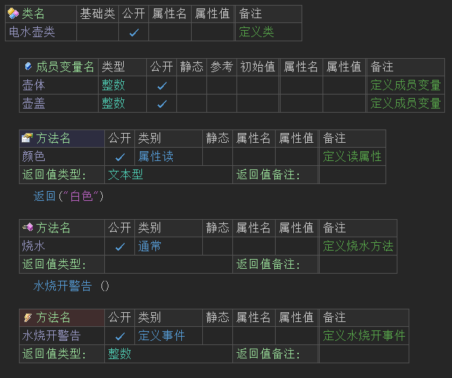
假设火山可以驱动这个电水壶操作，那么上述类在火山中的一步一步的调用示例如下图所示：
(1) 首先要定义一个类型为“电水壶类”的变量。
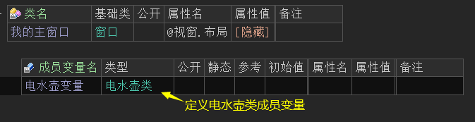
(2) 添加我的主窗口“创建完毕”事件。
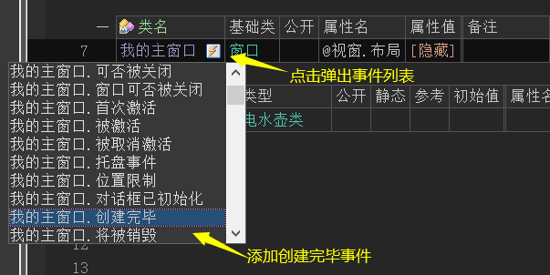
(3) 在窗口创建完毕事件下调用“电水壶变量.烧水()”
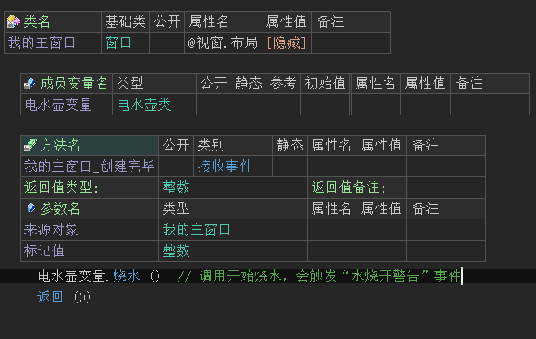
(4) 添加“水烧开警告”事件。
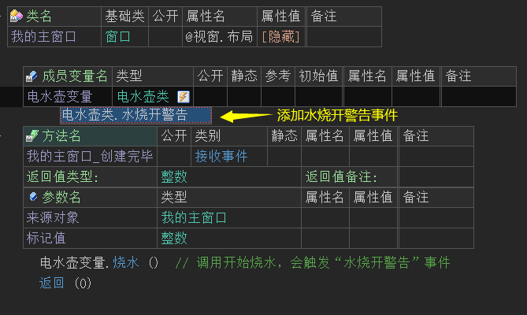
(5) 添加事件后显示一个信息框，提示水烧开了。
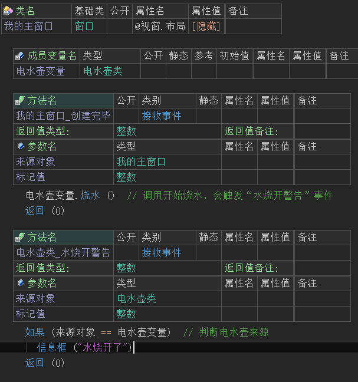
(6) 最终当火山程序运行时，会弹出水烧开的信息框，证明整个程序的执行流程是没有任何问题的。
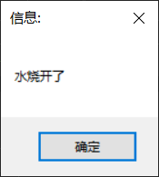
● 假设有一天，工厂想生产一种具有自动保温功能的电水壶，有两种方案：一是完全重新设计一个新的电水壶，二是在现有电水壶的基础上增加一个保温开关。很显然，第二种方式更经济实惠，工厂把这种新的电水壶称为保温电水壶，它增加了一个特点：
1、增加了一个开关： 保温，按下开关后可以对已经烧开的水进行自动保温。
按照前面的设计方法，由于新电水壶增加了一个成员，所以我们不能把它归纳到已有的“电水壶类”里面，但是我们可以建立一个新的类：“保温电水壶类”，它在“电水壶类”的基础上同样增加了一个新成员：
1、成员方法：保温（即按下开关就开始保温）
通过上述我们可以得出如下代码：
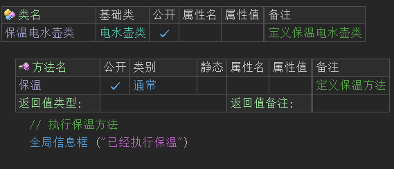
由于它基于“电水壶类”设计而来，因此我们把“电水壶类”称为“保温电水壶类”的基础类或父类，把“保温电水壶类”称为“电水壶类”的继承类或子类，它们之间是继承与被继承的关系，继承类自动具有基础类的所有特征成员。
由于继承类包括了基础类的所有成员，因此继承类也可以认为是基础类的一种。这个也很容易理解：我们可以把“保温电水壶”称为“电水壶”，但是不能把“电水壶”称为“保温电水壶”。假设客户要买1000个“电水壶”，现有产品数量不够时我们可以用“保温电水壶”来充数，但是客户要买1000个“保温电水壶”就绝对不能用“电水壶”来充数，是不是这个道理？
从程序设计的角度来讲，就是我可以把一个数据类型为“保温电水壶类”的对象赋值到一个数据类型为“电水壶”的变量，但是不允许把一个数据类型为“电水壶”的对象赋值到一个数据类型为“保温电水壶类”的变量。
如下图所示：
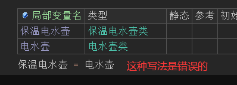
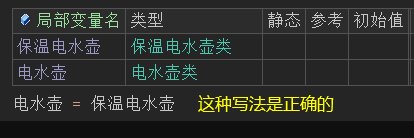
需要注意的是：如果把一个数据类型为“保温电水壶类”的对象赋值到一个数据类型为“电水壶”的变量，那么这个变量里面实际存储的还是一个“保温电水壶类”对象，并不会因为变量的数据类型为“电水壶”存储进去的对象的数据类型就也为“电水壶”了。这个也很好理解：工厂用“保温电水壶”充作“电水壶”交付给了客户，不会因为这个充数行为就导致“保温电水壶”产品变成“电水壶”产品了。
这就是类的继承，可以如下所示调用“保温电水壶类”：
(1) 首先定义“保温电水壶类”的成员变量。
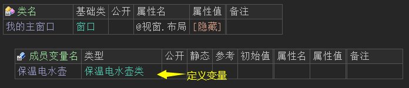
(2) 在窗口创建完毕后调用“烧水”方法。
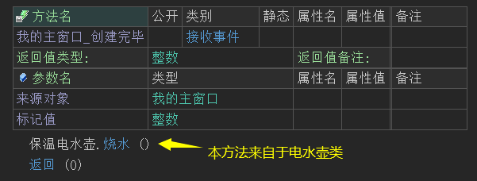
(3) 当水烧开后执行“保温”。
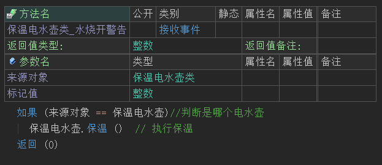
(4) 最终会弹出信息框提示，证明保温执行成功。
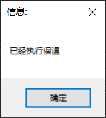
● 让我们继续假设，假设有一天工厂发现电茶壶的销路要比电水壶好，同样有两种方案：一是完全重新设计一个新的电茶壶，二是修改现有电水壶的烧水功能，将其改为烧茶。同样很显然，第二种方式更经济实惠。那么这种电茶壶的特点为：
1、修改了电水壶的烧水功能，使其改去烧茶。
同样，我们需要定义一个名为“电茶壶类”的类，然后定义一个同样名为“烧水”的方法，该方法覆盖了“电水壶类”中的原有名为“烧水”的方法，然后将“电水壶类”中的“烧水”方法标记为虚拟方法（虚拟方法仅是一个标记，用作标记“烧水”方法可以被继承类覆盖），这样以后调用“电茶壶类”类的“烧水”方法时，就会改去烧茶，而不会去烧水。
(1) 如上所描，首先对“电水壶类”进行一些细微的修改。
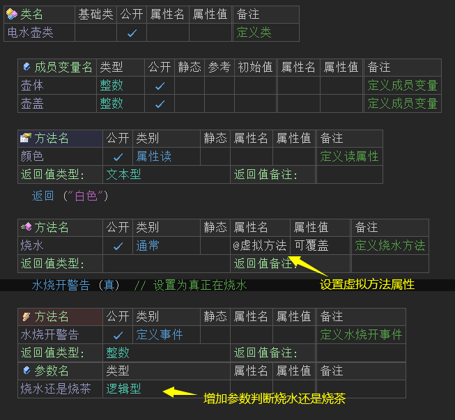
(2) 定义“电茶壶类”并继承电水壶类，添加“烧水”的虚拟方法。
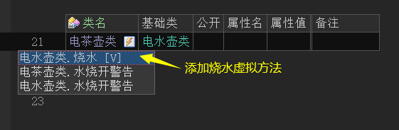
(3) 在“烧水”虚拟方法下调用“水烧开警告(假)”，用于发送茶烧开完毕。
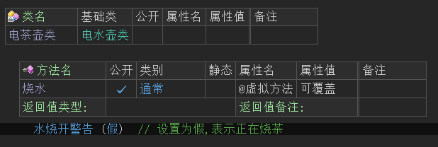
(4) 首先在主窗口中声明“电茶壶类”变量。
(5) 窗口创建完毕后调用“烧水”方法，本方法因设置了虚拟方法进行了修改，实际上是烧茶。
(6) 最后添加“水烧开警告”事件，判断茶是否烧开。
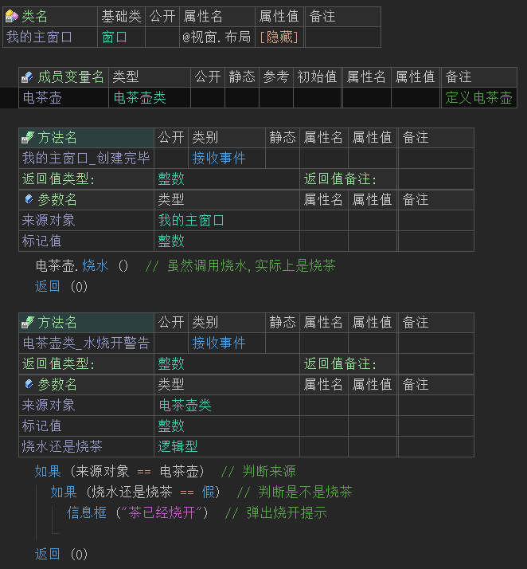
(7) 最终茶被烧开。
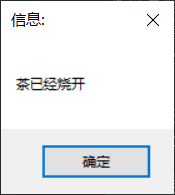
需要注意的是：如果把一个数据类型为“电茶壶类”的对象赋值到一个数据类型为“电水壶”的变量，据前所述，这个变量里面实际存放的还是一个“电茶壶类”的对象，因此如果调用该变量的“烧水”方法，实际上调用的还是“电茶壶类”的烧茶功能。
这就是类的多态，在“虚拟方法” 中的也有相应的操作案例可以学习。
● 以上就是火山中所使用的面向对象程序设计的全部内容了，最后一点其实与面向对象设计无关：
假设甲公司和乙公司都生产电水壶，商店如果同时进货了这两种电水壶，就必须在电水壶上分别贴上标签：“甲公司的电水壶”、“乙公司的电水壶”，以免引起混淆。
在程序设计里面，就对应为“甲公司.电水壶类”、“乙公司.电水壶类”，前面的“甲公司”和“乙公司”分别定义了一个命名空间，也叫做“包”。包用作避免名称混淆，在同一个名称的包内，不允许存在相同名称的类，在不同名称的包内，可以存在相同名称的类。
所有在包中定义的类，其名称前被自动加上包名，“包名.类名”称为类的绝对名称。如果该类的名称在程序的所有包中均唯一或者在该类所处包内部引用此类,可以省略掉其包名来引用此类。
譬如，假设程序中不存在“乙公司.电水壶类”或者在“甲公司”包自身的代码内部，就可以直接使用“电水壶类”来引用“甲公司.电水壶类”。
注意：包名中间也可以包括句点，譬如“湖北.武汉.甲公司”或“湖南.长沙.乙公司”，这样的命名空间更明确清晰一些，也更具有唯一性。
上述内容可参考关于“包”中的介绍案例。